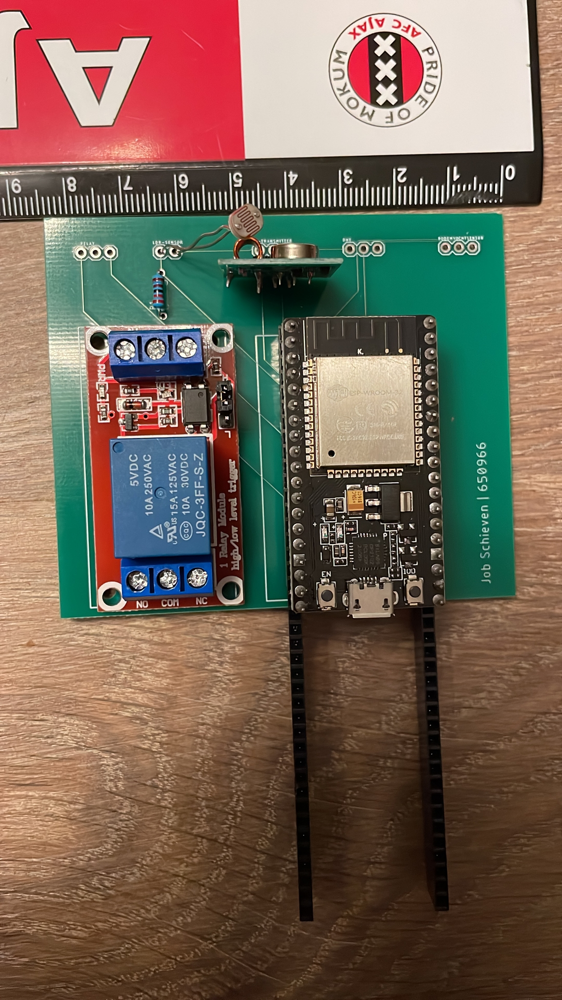
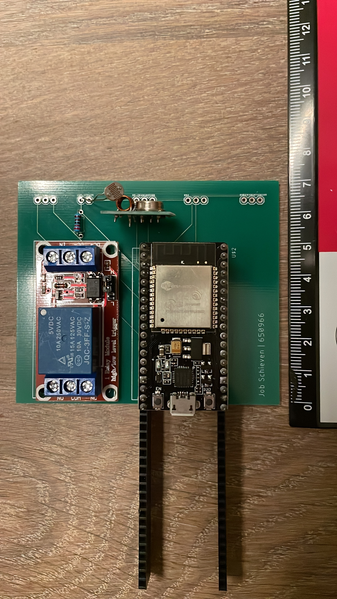
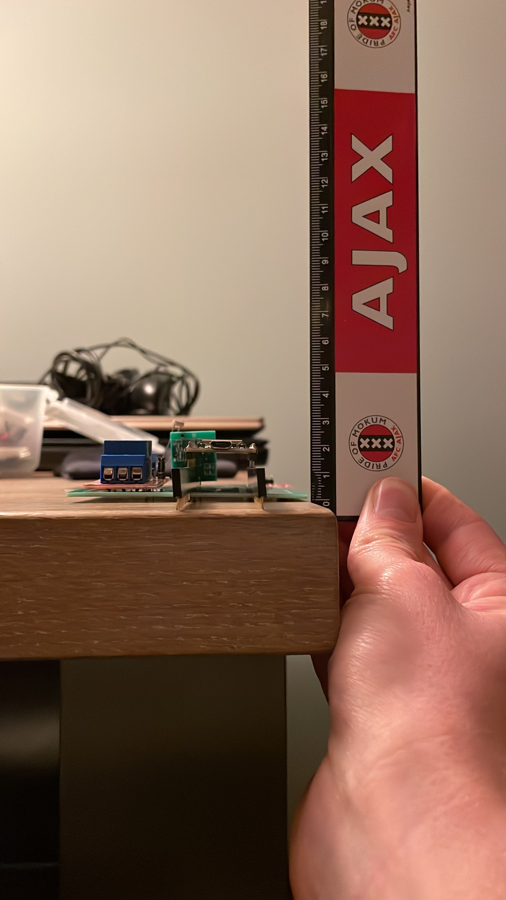
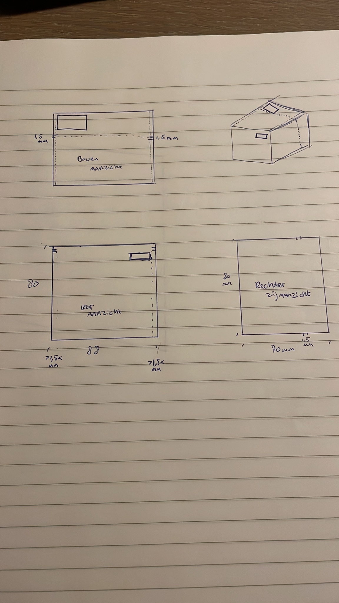
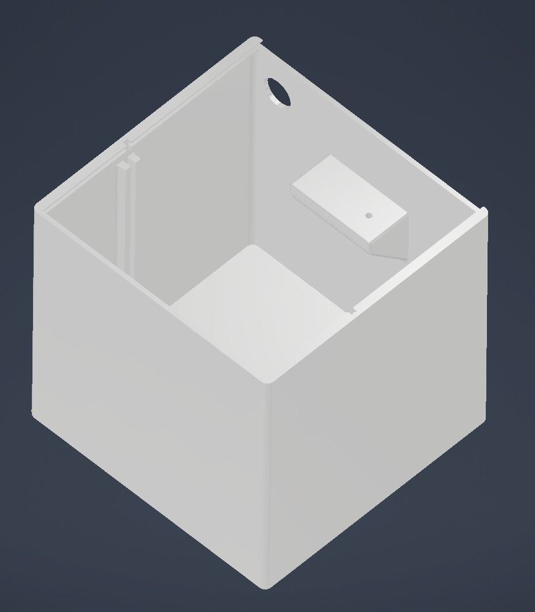

Daar waar er bij de andere workshops er iedere week een ander onderwerp werd behandeld die los van elkaar stonden maar wel met elkaar te
maken hadden is dat bij "Smart Technology" anders. Hierin gaan we daadwerkelijk iets realiseren. De opdracht is ons gegeven om een
"Plant water system" te ontwikkelen. Door middel van een microcontroller (de ESP32) en verschillende sensoren kan de huidige staat van de Plant
gemeten worden. Mits deze niet de juiste condities heeft kan de plant geconditioneerd worden middels licht en/of water toevoer. Om het systeem
compleet te maken was het nodig om software te engineeren, een PCB te ontwikkelen en solderen en dit gezamenlijk te verwerken in een 3D-geprint
bakje die wij ook zelf moesten ontwikkelen.
Deze opdracht ligt in het verlengde van mijn opleiding. Hierdoor was de moeilijkheidsgraad voor mij niet echt aanwezig. Het ontwikkelen van de software
was erg eenvoudig voor mij en het ontwerpen van een PCB had ik ook al meerdere keren gedaan. Daarentegen was het ontwikkelen van een 3D-model van het bakje
wel nieuw voor mij. Hierin heb ik mijzelf dus wel kunnen ontwikkelen.
Om er voor te zorgen dat ik mijzelf toch een toegevoegde waarde kon geven voor mijn leertraject heb ik er tijdens deze lessen op gefocust om
anderen te helpen. Doordat ik wat ervaring heb en het zelf net heb geleerd kan ik het goed overbrengen op een ander die daar baat bij heeft.
Realisatie proces
Plant-systeem
In eerste instantie heb ik voor het ontwerpen van het bakje alle onderdelen bij elkaar gelegd zoals deze straks ook gesoldeerd zullen worden.
Op deze manier heb ik een idee hoe groot het geheel is en dit zijn dan ook de minimale maten die benodigd zijn voor het bakje.
Voor de zekerheid heb ik aan alle kanten 1 cm extra genomen, zodat ik strak geen ruimte gebrek heb. Hieronder de afmetingen
Lengte meting

Hoogte meting

Breedte meting

Ik had het idee om de PCB middels een schuifmechanisme klem te zetten in het bakje, zo zijn er geen schroef verbindingen nodig, maar kan het
er toch eenvoudig uitgepakt worden. De pomp, de bodemvochtigheidssensor en de lichtweerstand moeten buiten het bakje bevestigd worden. Hier moeten
wel kabels naar toe dus daarmee heb ik rekening gehouden door een gat in de zijwand te maken. Het accu pakket had ik achter de PCB bedacht zodat deze niet
tegen de componenten op de PCB aankomt.
Het ontwerp is hieronder schematisch uitgewerkt:

Dit onderdeel heb ik vervolgens uitgewerkt op de computer in een 3D-model. De deksel heb ik ook met een schuifmechanisme gemaakt, zodat deze makkelijk te
demonteren is, omdat je bij het accupakket moet kunnen.
Het 3D-model is hieronder te zien:

Dit eindresultaat is geconverteerd naar een bestand die door de 3D-printer te lezen is. En vervolgens is deze uitgeprint.
Na een printtijd van 10:30 uur is het resultaat geworden zoals te zien is in het volgende filmpje:
Conclusie
Plant water system
Leertraject Zoals ik hierboven al had toegelicht is het ontwerpen van een plant water systeem niet direct een uitdaging voor mij. Daardoor heb ik voor
mijzelf als leerdoel gesteld om anderen te helpen en hen verder te helpen bij hun leertraject. Ik heb het als erg leuk ervaren om mijn expertise over
te brengen op een ander. Hierbij heb ik geprobeerd de moeilijkheidsgraad voor een ander in te zien en daarop in te spelen. Juist door het niet zomaar
voor te zeggen, maar door vragen te stellen en hun zelf aan het werken te zetten en te laten denken heb ik geprobeerd om de basics toe te lichten. Het was
leuk om eens van die kant te werk te gaan. Kortom; de lessen Smart Technology zijn alsnog erg waardevol voor mij geweest en ik kijk met een tevreden gevoel
terug op deze lessen.